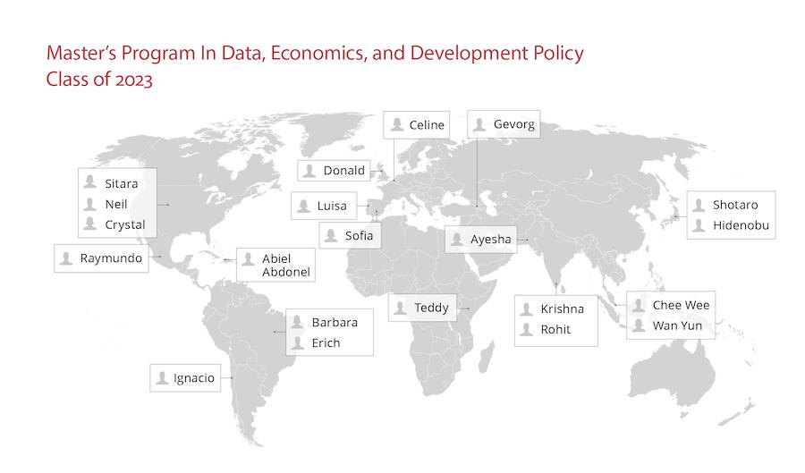

I’m a survey methodologist, R devotee and lifelong student.
I am associated with the Centre for Sociological Research, University of Leuven and am currently pursuing the MIT Master’s in Data, Economics, and Development Policy (DEDP) (Class of 2023).
Download my resumé.
 Source: Master’s in Data, Economics, and Development Policy (DEDP) | Student Directory
Skills
Data wrangling, analysis and visualization
Statistical modeling
Survey management and coordination
Questionnaire design and programming
Interests
Economic decision-making (under uncertainty/scarcity)
Gender stereotypes, social norms and networks
Reproducible research
Survey error as social artefacts
Effective altruism